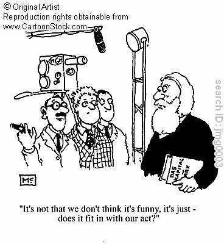

Marx II, the end is nigh?


Senior Seminar in
Literary Criticism and Theory
Begin Thursday Reading Groups (TRG)
[choose one reading: Benjamin, Williams, Jameson]
Begin Outside Reading Presentations (ORP)
Marx II, the end is nigh?
9/23/10
Notes on Williams.
There is a simple theoretical distinction between alternative and oppositional, that is to say between someone who simply finds a different way to live and wishes to be left alone with it, and someone who finds a different way to live and wants to change the society in its light. This is usually the difference between individual and small-group solutions to social crisis and those solutions which properly belong to political and ultimately revolutionary practice. But it is often a very narrow line, in reality, between alternative and oppositional. A meaning or a practice may be tolerated as a deviation, and yet still be seen only as another particular way to live. But as the necessary area of effective dominance extends, the same meanings and practices can be seen by the dominant culture, not merely as disregarding or despising it, but as challenging it. (Williams)
residual/emergent
READING GROUP NOTES
GROUP 1
Jameson
Post and cons society
link pomo with late capitalism and consumerism
1988
in order to explain postmodernism
after it already begun. descriptive.
hotel .bonaventure hotel in Las Vegas
mirror... distorted city landscape
nothing new, recycled view of old thing
star wars ^ recycled buck rodgers
films and pop culture influence how people think and live
pomo art no^longer shocking
in lock step with middle class society
class different groups
no norm anymore --- we compare ourselves to groups...
pastiche ...
modernism
postmodernism
consumer society
--- pop literature --- middlebrow
combining the classes
base and superstructure
formal features express a logic of the social structure
critique
no longer innovation in art
technology --- new art---
group 2
benjamin
1052 facism on the other hand
usefulness of art , reproducibilty for politics
keywords
religion, technology, reproducibility, aura
uniqueness of art --- replications limited versus unlimited
assumed to much of the
over-valueing the original
group 3
ignores the intrinsic value of the original
setting and aura -- statue
derivative
different not worse
flash mobs...
talks about the aura
films vs. stage
paintings vs. photographs
technology removes the aura...
poem written
group 4.
keywords --- reproducibility
audience reaction to it
redefine art through changing technology
media -- aura
technology outpaces our ability to respond to it
removed---